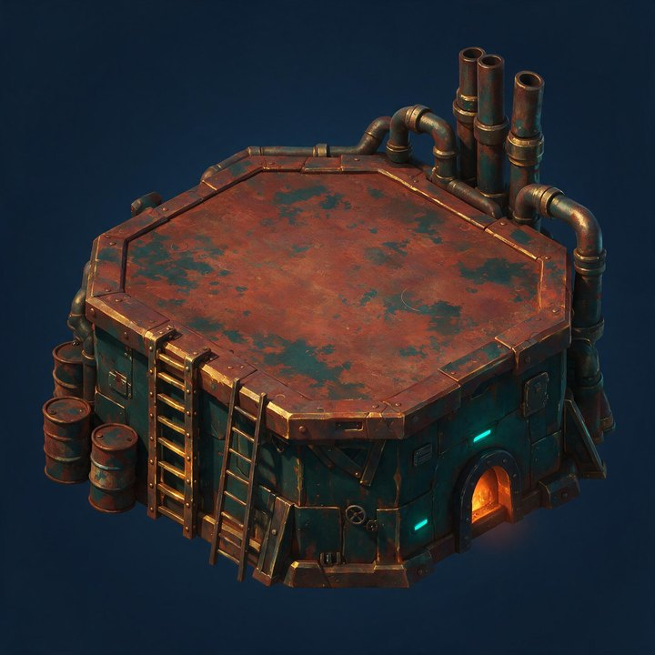
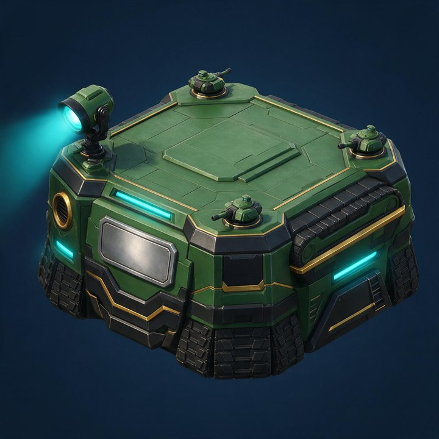
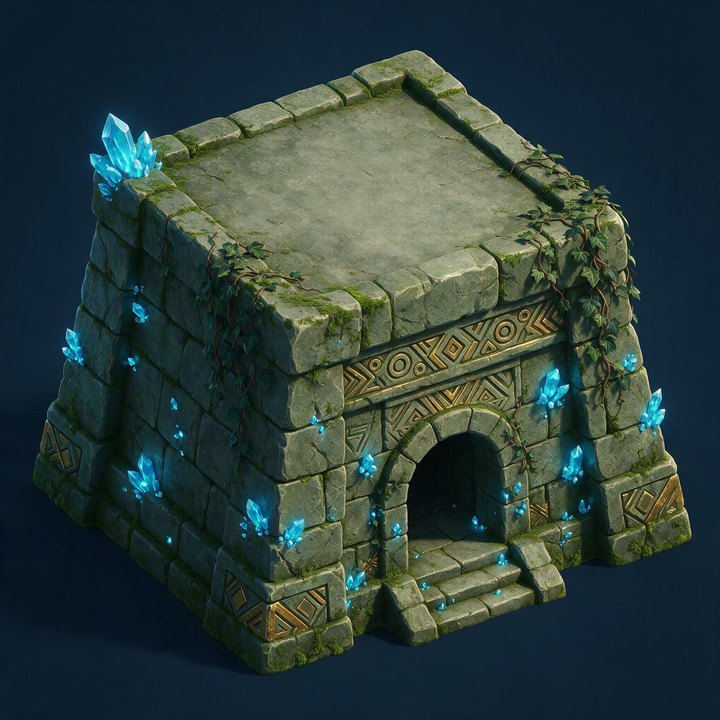
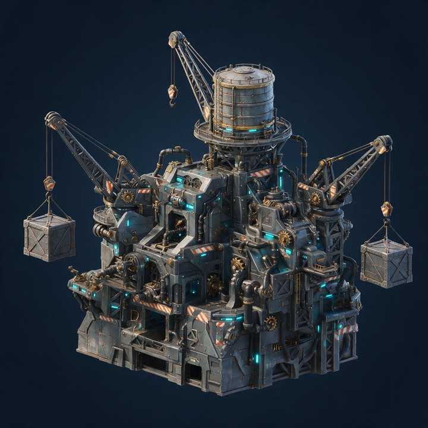
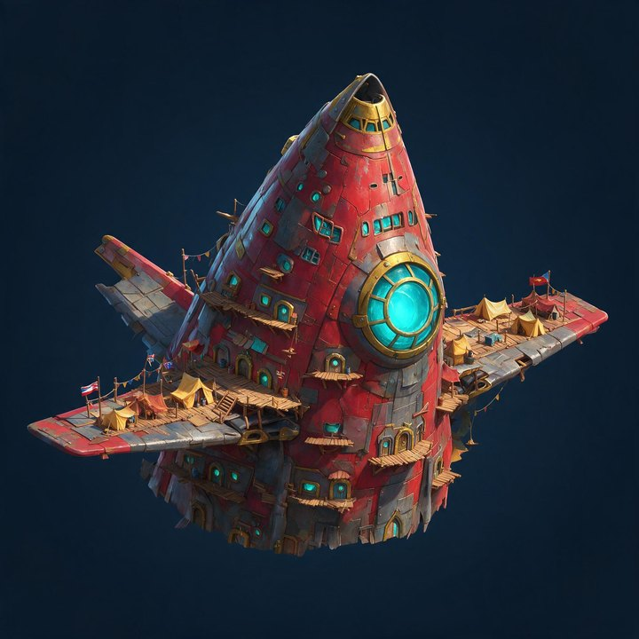
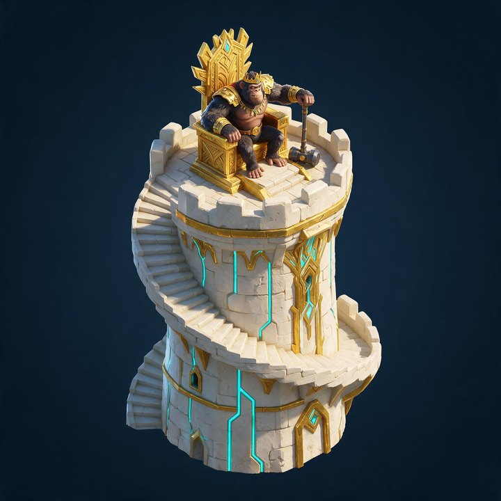
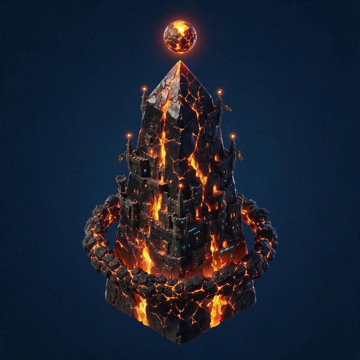

01这是什么

| 部件 | 槽位 | 定位 | 决定什么 |
|---|---|---|---|
| 城基 | 1 个，不可空 | 辅助付费 | 这座城站在什么上面 —— 体量、轮廓基调、占地 |
| 城市本体 ★ | 1 个，不可空 同时只穿 1 款 | 主力付费 | 这座城是什么 —— 题材、叙事、辨识度。玩家在主城和世界地图上第一眼看到的是它 |
| 城辉 | 1 个，可空 | 低单价 | 环绕整城的特效层，不是实体件 |
| 色板 | 不占槽 | 最低单价 长尾复购 |
施加在某一款城基或某一款本体上的配色，绑定部件不是全局染料 |
装配槽永久固定 3 个，不随期数增加。首期 4 款本体抢这 1 个槽 —— 想换个样子就得再拥有一款， 这是「多买一件」有意义的前提；加槽就等于让已有部件同时上身，取舍消失，后续的款就没人买了。
02为什么做
数据源：1312 city_skin / 1388 city_suit_module / 1389 city_suit 三表逐行实测。
| # | 现在的问题 | 实测依据 | 后果 |
|---|---|---|---|
| ① | 集齐即终点 | 7 套主城套装全是「2 皮肤 + 2 挂件 + 1 特效 = 5 件 → 送最终形态」，无一例外 | 一期最多 5 个可售单位，第 6 次付费无处可去 |
| ② | 玩家零选择权 | 1389 的 A_ARR_items 是策划填死的固定 id 数组 |
只有「集齐 / 没集齐」两种状态，「我的主城」不成立 |
| ③ | 换新即弃旧 | 1312 共 124 张皮肤，同时只能穿 1 张；套装之间无跨期互通 | 旧付费随新内容上线归零，玩家知道这事，反过来压当期购买 |
| ④ | 换色引擎闲置 | A_INT_dyeing_skin 已上线，2024 圣诞做到过「一皮四色」，但2026 全年新增 0 行 |
一整个维度没进投放 |
03系统规则
3.1 装配
3 个槽：城基 ×1（不可空）、本体 ×1（不可空）、城辉 ×1（可空）。任一城基可配任一本体，不做组合限制。
切换装配零成本、无冷却、不消耗道具；未拥有的件可试穿预览，试穿态不可保存。 满意的搭配可存进「预设方案」一键切换，初始 2 个槽免费，第 3 槽起解锁。
3.2 换色
色板绑定到具体某一款部件，不是全局染料。每款部件出厂自带 1 个默认色（随件获得、不单卖）， 另配可购色板。城基与本体各自独立换色，互不影响。
配置上走 1312 的 A_INT_dyeing_skin 指向母部件 —— 引擎已支持，这部分不用开发。
不做通用染料的理由：任意颜色刷任意模型必然出现难看的组合，而这个系统的门面就是好看；
且通用染料买一次就够，绑定色板则每款部件各自是商品。
3.3 璀璨态
城基槽的件 且 本体槽的件 且 城辉槽的件，三者同时达到当期稀有度门槛 → 主城进入璀璨态 （额外全局光效 + 城池名特效 + 铭牌标记）。实时判定，装上即触发、卸下即消失。
门槛跟随当期最高稀有度，每期重定 —— 所以每上一期，璀璨态就重新变成要追的东西，不会封顶。 达成过的期次永久记在铭牌上（如「四周年·璀璨」），后续期次不剥夺。
| 槽 | 首期门槛件 | 稀有度 | 走哪条货架 |
|---|---|---|---|
| 城基 | B3 苔垣遗基 | 当期城基最高 | 累充高档位 |
| 本体 | C4 熔心方尖 ★ | 当期最高 | 节日 GACHA 主推 |
| 城辉 | A1 环星光带 | 高 | 节日 BP 付费轨顶奖 |
三件故意分散在三条不同货架，不做单一礼包一键达成 —— 一键达成会让璀璨态退化成一个 SKU， 与「璀璨态不可直购」这条红线冲突。当期礼包最多打包其中两件。 免费通路产出的件稀有度不够，零氪玩家当期达不成璀璨态，这是外观差距不是功能差距。
3.4 收藏度
按玩家已拥有的全部部件累计，持有即计分，与是否装上无关，永不清零。回报是段位徽记 + 图鉴完成度。
这条是专门解决问题 ③ 的：玩家知道「买了下期就穿不上」会压当期购买， 持有即计分把这个抑制从机制上取消 —— 买了不用也不算白买。图鉴按类型分四册，未拥有显示暗色剪影不隐藏。
04首期内容设计
4.1 城基 3 款（顶面一律留空，只做下半段）

B1 锈铁台
造型废土工业风方形平台，锈蚀钢板一层层焊叠，边缘堆油桶、外挂粗管道、挂铁梯。 侧面开一个小熔炉口，透暖橙光。
文案锈铁台 —— 锈钢焊就的地基，风沙压不弯
为什么它走免费零氪玩家也得能换掉默认底座，否则这个系统对他们就只是一排锁。

B2 磐甲基
造型军事装甲风平台，厚装甲板层叠拼接、棱角硬。四角挂小炮台，侧面装探照灯、侧壁贴履带结构， 正面留一个金属徽记位。
动态探照灯缓慢左右扫，扫过时地面有一道亮痕。
文案磐甲基 —— 装甲层层锁死，炮火撼不动

B3 苔垣遗基
造型丛林遗迹风石砌台基，大块条石砌成、缝里长苔藓爬藤蔓。侧面一个拱门洞， 门楣有一圈抽象几何浮雕纹。石缝里嵌青蓝晶簇，一簇簇从底部往上长。
动态晶簇呼吸式明暗，藤蔓叶片极轻微风摆。
文案苔垣遗基 —— 藤蔓爬满旧墙，矿脉仍在发光
4.2 城市本体 4 款（底面一律平切，4 款抢 1 个槽 ★主力付费点）

C1 铁工巨械
造型机械巨构，两三条起重吊臂伸出去（一条挂吊钩和货箱），城体外壳挂满外露齿轮、 传动轴、蒸汽管，顶上立一个圆柱水塔。整体是「一座还在开工的工厂」。
动态吊臂缓慢摆动，大齿轮持续转，蒸汽管每隔几秒喷一次白汽。
文案铁工巨械 —— 吊臂昼夜不歇，齿轮咬住整座城

C2 赤翼星舰
造型一艘坠落星舰被改造成城 —— 舰首朝上斜插，舰体开窗开门变成居所， 两侧机翼张开当瞭望台、翼面搭木栈道和帐篷（有人住进去的痕迹）。正面一块大舷窗透青光。
动态舷窗青光呼吸，翼尖航行灯闪烁，舰体某处漏出细烟。
文案赤翼星舰 —— 坠落的舰身翻身成城，机翼仍在张

C3 猿王座
造型要塞高塔，塔身有盘旋而上的外挂阶梯和垛口。塔顶一个金饰王座， 猿王坐镇其上、手握长柄战锤，坐姿要稳、有压迫感。塔身镶金色纹饰和青色灯槽。
动态猿王极轻微的呼吸起伏，斗篷／旗布随风摆；塔身青灯槽缓慢流光。
备选若「活体猿王」在主城场景里太抢戏，改做巨型猿王石像坐王座的雕塑版，其余不变。
文案猿王座 —— 塔顶有猿王坐镇，锤落风起

C4 熔心方尖 ★
造型黑曜石方尖碑，四棱锥往上收、通体裂开不规则纹路，裂缝深处流动熔岩、光从里往外渗。 碑体底部一圈熔岩岩基（岩浆已凝壳、缝里还亮）。碑顶悬浮一颗熔核，不接触碑体。
动态熔核缓慢自转并上下微浮，裂缝熔光沿裂纹流动，碑面有热浪扰动，底部持续升余烬。
为什么不出购色最高稀有度不做配色分流 —— 它是当期璀璨态门槛件， 唯一性本身就是卖点，多出几个色反而摊薄。
文案熔心方尖 —— 熔核封在碑里，裂缝透出光
4.3 城辉 1 款

A1 环星光带
表现一道光带从城体腰部升起、绕整座城水平铺开成一个略倾斜的环 —— 内层青色实心光带、外层裹一层金色细碎光尘，两层反向缓慢旋转。光带经过城体时从建筑背后穿过、 正面转半透明。城基周围持续有橙金余烬往上飘，飘到光带高度被卷进环里带走一圈再消散。
为什么首期只做 1 款城辉是四类里美术单价最高、复用性最差的（特效资源没法靠换材质派生变体）。 首期投 1 款验证一件事：玩家愿不愿意为纯特效单独付费。通过再决定第二期加几款、要不要开购色； 不通过就降级成其它品类的附赠，不再单独立项。
文案环星光带 —— 一道光绕城不落，余烬随风上
4.4 可购色板 9 个

| 母件 | 默认色（随件获得） | 可购色板 | 色感 |
|---|---|---|---|
| 城基（每款 2 个可购色） | |||
| B1 锈铁台 | 锈铁原色 | 熔橙钛灰 ｜ 曜石霓虹 | 橙锈配冷灰金属 ｜ 纯黑底 + 品红霓虹描边 |
| B2 磐甲基 | 军绿装甲 | 极地冰蓝 ｜ 沙暴迷彩 | 白装甲 + 冰蓝灯带 ｜ 土黄砂砾三色迷彩 |
| B3 苔垣遗基 | 苔石灰绿 | 翡翠夜光 ｜ 赭石晨曦 | 深绿石材 + 荧绿矿脉 ｜ 暖赭红 + 晨光金 |
| 城市本体（每款 1 个可购色） | |||
| C1 铁工巨械 | 工业铁灰 | 钴蓝铬银 | 钴蓝主色 + 抛光铬银构件 |
| C2 赤翼星舰 | 赤翼绯红 | 绯红鎏金 | 绯红舰体 + 鎏金边饰 |
| C3 猿王座 | 石灰岩白 | 黑金帝威 | 黑曜石座 + 金纹雕饰 |
| C4 熔心方尖 | 熔心橙 | 不出购色 | 门槛件保唯一性 |
05美需
四条通用硬约束（比单款造型重要，美术开工前必须先定）
万象主城是常驻系统，部件要跨期互相搭配：这期的本体要能装往期所有底座，这期的色板要能刷往期所有部件。 下面四条一旦定死就不能改 —— 事后改等于已产的全部部件重做。
- 底座顶面必须留净空区。三款底座的顶面挂载点坐标、朝向、可承载直径全项目一套值， 顶面中心不许有凸起结构（本体会插进去）。
- 本体底面必须平切。接口尺寸上限、重心位置、包围盒上限统一， 底部不要长出悬浮岛式的参差结构（首轮出图 AI 就长过，被驳回重出）。
- 材质槽命名必须统一。色板靠材质槽做批量替换（如
body_main / body_trim / glow_a）， 命名不统一就只能逐款手配，后续每期 8 个色板的产能直接卡死。 - 城辉不许遮挡本体的识别轮廓。本体是付费大头，特效盖住等于削弱玩家刚买的东西 —— 光带必须从建筑背后穿过、正面转半透明。
⚠ 这四条的具体数值请美术在首期开工前给出，配置与后续所有期都按这套值走。
5.1 每款的避坑项（美需表里逐款展开，这里只列最容易踩的）
| 部件 | 避坑 |
|---|---|
| B1 锈铁台 | 不要做成完整的房子或碉堡（它只是垫在下面的一层）· 细节不要堆到顶面中心 · 不用猿族图腾 |
| B2 磐甲基 | 不要做成坦克或载具（撞科技节 2026 方向）· 不要霓虹 KTV 风 · 徽记不要做成真实国家或军队标志 |
| B3 苔垣遗基 | 不要做成寺庙或祭坛（避宗教符号）· 晶簇不要做成宝石堆 · 不要热带海岛感，是内陆废墟 |
| C1 铁工巨械 | 不要做成钻井平台或采矿车 · 齿轮要有咬合关系不能是贴图 · 管线不要盖住城体轮廓 |
| C2 赤翼星舰 | 不要做成完整能飞的飞船（是坠毁后改造，要有破损和加建痕迹）· 不要做成现实具体机型 |
| C3 猿王座 | 不要做成宗教神像或供奉台 · 猿王不要卡通萌系（这款是身份象征要威严）· 战锤不要挡住塔体 |
| C4 熔心方尖 | 不要做成火山（是人造碑体不是自然地貌）· 熔核不要做成宝石或能量罐 · 裂缝光要有流动方向不能是均匀发光贴图 |
| A1 环星光带 | 不要做成土星环那样的宽扁盘 · 不要满屏粒子（会糊掉城体）· 不要闪频过快（主城是常驻界面会累眼） |
| 色板通用 | 同一部件的两个色板色感不要撞车 · 霓虹类只保留一条主霓虹线，不要整体发光 |
一个题材冲突，提前说清
主城套装的循环档期是 3 月科技节和 11 月感恩节。科技节历年方向已用满 废土工具 / 废土工业 / 摩登都市 / 星际飞船 / 军事机甲，且避坑项明确写了 ❌ 猿族元素（科技节起去猿族化）。
本案首期是废土工业 + 装甲军事 + 丛林遗迹的中性题材，且 C3 用了猿王 —— 与科技节撞方向、也和它的去猿族化冲突。处理方式：万象主城是常驻系统、不是节日套装循环， 首期题材刻意做中性当底子（往期不下架、要跨期通用，题材越中性越耐配）， 节日主题留给后续每期新增的那 1-2 款。所以美需没挂节日 tab，走「临时需求」那类独立 tab （主表已有先例：临时需求-世界杯装饰物）。
06付费结构
6.1 付费点
| 编号 | 卖什么 | 玩家在什么情形下会买 | 货架 |
|---|---|---|---|
| P1 | 城基 | 买了新本体，发现装在自己那款旧底座上比例不搭 → 补一款底座 | 累充 / 常驻商店 |
| P2 | 城市本体 ★ | 本体槽只有 1 个，本期新款比手上任一款都更想穿 → 买来替换，旧的进预设备用 | 节日 GACHA / 常驻商店 |
| P3 | 城辉 | 城基和本体都够门槛了，城辉槽空着 → 差这一件进不了璀璨态 | 节日 BP 付费轨 |
| P4 | 色板 | 本期新色能同时刷手上 3 款旧底座 → 一次低单价购买改变三套搭配 | 限时抢购 / 省省卡 |
| P5 | 预设方案槽 | 手上 5 款本体但只有 2 套预设，换风格每次都要拆装 → 买第 3 槽 | 限时抢购 |
| P6 | 当期礼包 | 想一次拿到当期璀璨态门槛所需的件（最多打包两件） | 节日 GACHA / 签到 |
6.2 一期能卖多少
2 皮肤 + 3 挂件
3+4+1 件 + 9 色板 + 1 槽
约 2.9×
真正的差别不在倍数：现在模式第 6 期的 5 件只卖给想要第 6 期主题的人； 本案第 6 期的 8 个新色板，作用对象是前 5 期累积下来的 13 款底座 + 14 款本体的全部持有者。 色板是唯一一个可售单位数随体系规模线性增长的品类。
红线（定版，逐期不改）
- 璀璨态不可直购 —— 只能由三件装配达标产生，任何货架不得直接出售。
- 装配槽永久 3 个，不随期数增加、不作为付费点。
- 收藏度不可直购 —— 不出售收藏点数。
- 不设外观付费墙 —— 默认底座免费永久；每期免费通路保底 1 件部件 + 1 个色板。
- 往期部件永不下架 —— 否则收藏度目标不可达、新玩家图鉴永远缺口。
07发放货架
本系统不新建任何发放玩法。除 D1 外全部挂现有坑位，每期只换商品内容。
| 通路 | 货架 | 发什么 | 说明 |
|---|---|---|---|
| 付费 | |||
| D1 | 万象主城常驻商店 | 四类部件单件直购 | 唯一新建的货架；往期部件永久在架可补票 |
| D2 | 节日 GACHA | 当期主推本体（主力） | 沿用现有 GACHA 坑位，只换奖池 |
| D3 | 累充（个人/服务器/联盟） | 当期城基 + 色板 | 沿用现有三件套结构 |
| D4 | 限时抢购 / 省省卡 | 色板 + 预设方案槽 | 低单价高频位 |
| D5 | 节日 BP 付费轨 | 当期城辉 | 款数少单价高，适合顶奖 |
| 免费（零氪闭环保底） | |||
| D6 | 签到 / 每日任务 | 每期至少 1 个色板 | 零氪的换色入口 |
| D7 | 节日 BP 免费轨 | 每期至少 1 款城基或本体 | 零氪每期至少新增 1 件可装配部件 |
| D8 | 活动积分兑换商店 | 往期部件错峰回归 | 给往期内容第二次生命 |
| 存量接入 | |||
| D9 | 历史主城套装转译 | 7 套旧套装 → 收藏度 + 整套预设 | 边界见 §09 第 3 条 |
免费件与付费件在装配上完全等价 —— 不做「免费件不能进某槽」「免费件不计收藏度」这类限制， 唯一差别是稀有度较低、因而通常达不成璀璨态。
08开发要做什么
| 项 | 性质 | 说明 |
|---|---|---|
| 1389 槽位化改造 | 新做（主项） | 从「A_ARR_items 固定 id 数组」改成「槽位 + 玩家从已拥有的同类件里任选」。
表结构本来就是定长槽位数组（拓荒节没侧挂件就填 0 占位），改的是取值来源与客户端装配逻辑 |
| 预设方案存档与切换 | 新做 | N 组装配状态（3 槽 + 各槽配色）服务端存取 |
| 收藏度统计与结算 | 新做 | 按持有部件计分 + 段位 + 图鉴四册进度 |
| 换色交互归组 | 改造 | 现有实现是「每个配色一条独立 1312 行 + 一个独立道具」，UI 上要按 dyeing_skin
归组成「同一部件的色板条」，而不是并列成多张皮肤 |
| 璀璨态判定 | 新做（轻） | 装配状态实时判定三槽稀有度门槛，触发全局光效 |
| 换色引擎 | 已有 | 1312 A_INT_dyeing_skin 已上线并跑过真实内容，不用开发 |
| 部件表结构 | 已有 | 1312 / 1388 / 1389 / 1511 / 1512 沿用；1388 的 C_INT_type 需扩位 |
| 发放货架 | 已有 | D2-D9 全挂现有坑位，仅 D1 常驻商店新建 |
8.1 需要开发先确认的四件事
- 主体本体落哪张表。1312 承载的是「一整座城」，1388 承载的是「挂件」，而本体是「上半段城体」， 性质介于两者之间 —— 走哪张表决定模型挂载与换色的实现方式。
- 装配状态能否同步给其他玩家客户端。主城外观要在四个场景生效（自己主城 / 世界地图 / 被侦查 / 联盟来访），不能只存本地。
- 世界地图上大量主城同屏时城辉的降级策略。如果世界地图一律不显示特效， 城辉就只有自己能看到，付费理由减半 —— 这条决定城辉值不值得做。
- 「占两槽的不可拆组合」在装配逻辑上怎么表达（历史套装接入用）。
09要拍板的
| # | 要定什么 | 不定的后果 | 我的建议 | 什么时候必须定 |
|---|---|---|---|---|
| 1 | 属性 buff 怎么算 | 现有 1388 每个挂件带 buff 200-300、1389 套装另给 1000。首期 8 件还扛得住， 第三期部件破 20 之后按现口径叠加会打崩数值 | 单件不再带属性 buff，全部收口到收藏度做递减曲线 + 硬上限；
citybeauty 保留在单件上（本来就是外显指标） |
首期配表前 |
| 2 | 挂载点规范什么时候定 | 底座顶面接口尺寸不统一 → 新本体装不上往期底座 → 「新件配旧件」这条立论直接不成立， 系统退化成一期一套。事后改等于已产部件全部重做 | 首期美术开工前定死，写进美需模板；换档流程固定一道闸门： 新本体 × 全部往期底座逐一试装，不通过不上线 | 美术开工前 |
| 3 | 老玩家那 7 套旧套装怎么接 | 不接的话，已买 7 套旧套装的老付费玩家在新系统里资产完全用不上，等于背刺 | 整套接入部件池、占两槽的不可拆组合，可随时切换、全部计收藏度。 但拆不出件混搭（旧模型没统一挂载点，拆开必然错位穿模）—— 这条边界要跟玩家讲清 | M1（评审通过后 2 周） |
| 4 | 首期跟哪个档期上线 | 决定美术排期与美需 tab 归位；也决定当期璀璨态门槛件的题材是否要跟节日走 | 避开 3 月科技节（撞方向 + 去猿族化冲突，见 §05）。 题材已做中性，跟哪期上线都不违和，你定档期我改 tab 名 | 尽快（美术排期要用） |
10每期换档怎么跑
| 层 | 每期变 | 永久不变（= 开发一次） |
|---|---|---|
| 结构 / 规则 | 不变 | 3 个装配槽 · 四类部件定义 · 璀璨态判定 · 收藏度算法 · 预设方案 · 图鉴四册 · D1-D9 货架位 |
| 内容 / 美术 | 全换（每期 2 城基 + 2 本体 + 1 城辉 + 8 色板） | — |
| 璀璨态门槛 | 每期重定 | 判定方式不变（三件同时达当期门槛） |
换档五步
- 美需 —— 按当期节日主题出新部件美需，必须附挂载点规格（这是与现有主城皮肤美需最大的差别）
- 美术批产 —— 模型 2+2+1，色板 8 个材质变体
- 配表 —— 1312 新增城基/本体行（含 dyeing 分组）、1388 新增城辉行、1511 资源、1512 特效路径
- 挂货架 —— D1 上新品；D2-D5 换商品；核对 D6/D7 免费保底「1 件 + 1 色」达成
- 试装闸门 + 上线回归 —— 新本体 × 全部往期底座逐一试装；上线后看持有率 / 装配率 / 预设槽使用 / 收藏度分布 / 各货架营收
⚠ 第 5 步的试装工作量随期数增长（第 N 期要试装 N 组以上），不能省 —— 省掉的那一组就是玩家买了装不上的那一组。
版本 v3.0（2026-08-20）重写版。v1.0 是 16 章模板案（论证套话过多，已归档
_archive_16chap.html）；v2 是一页纸（onepager.html，
30 秒版，留着给别人快速看）。本版以首期设计与美需为主体，砍掉核心循环 / 分层体验 / 立项论证 /
风险对策四章模板内容，只保留能直接拿去对齐的部分。
配套：开发需求表 J_万象主城（三页签 + 14 张横屏交互图）·
美需 新系统-万象主城（首期）